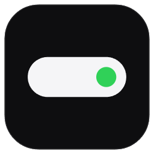

Chung
Phím tắt
Thoát nhanh: Ctrl Alt Q. Mở Cài đặt: bánh răng trên viên thuốc, chuột phải viên thuốc hoặc bấm đúp icon khay.
Viên thuốc
Tab trên thanh icon
Bấm icon để ẩn / hiện tab · chấm xanh là trang mặc định
Tự ẩn
Khi ẩn, viên thuốc thu thành vạch nhỏ ở mép trên; đưa chuột lên sát mép trên, ngay giữa màn hình, giữ khoảng 0,3 giây để gọi ra. Game Direct3D toàn màn hình độc quyền luôn ẩn hẳn; nhắc ghi chú luôn hiện.
Thời tiết
Thêm nhiều địa điểm và chuyển qua lại ở trang Thời tiết của viên thuốc. Địa điểm chính hiện nhiệt độ ngay trên viên thuốc khi không phát nhạc.
Dữ liệu từ Open-Meteo (miễn phí), cập nhật mỗi 15 phút. Tối đa 8 địa điểm. Vị trí hiện tại được đoán bằng cách gửi địa chỉ IP của máy tới ipwho.is (dự phòng ipapi.co); tắt "Vị trí hiện tại" nếu không muốn.
Thông báo
Viên thuốc nở ra khoảng 4 giây để báo những việc dưới đây.
Nhắc ghi chú theo giờ (trang Lịch) luôn đổ chuông.
Bảng tạm & Kệ tạm
Lịch sử bảng tạm chỉ lưu trên máy này (không gửi đi đâu), dạng văn bản thường. Nội dung trình quản lý mật khẩu đánh dấu là nhạy cảm được tự bỏ qua. Kệ tạm chỉ nhớ đường dẫn, xóa kệ không xóa tệp thật.
Dữ liệu & nhật ký
Giới thiệu
